2．同余理论
虽然同余的概念不是从高斯开始的——它出现在欧拉（Leonhard Euler）、拉格朗日（Joseph-Louis Lagrange）和勒让德（Adrien-Marie Legendre）的著作中——但是高斯在《探讨》的第一节引进了同余的记号，并在此后系统地应用了它。基本思想是简单的。数27以4为模同余于3，
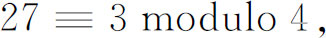
因为27－3恰被4整除。（字modulo常常简写为mod。）一般地说，当a，b和m是整数时，如果a－b（恰）被m整除，或者如果a和b被m除时具有相同的余数，那么
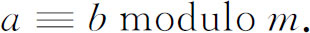
这时就说b是a的模m剩余，或者a是b的模m剩余。正如高斯所指出的，对固定的a和m，以m为模的a的一切剩余由a＋km给出，这里k＝0，±1，±2，…。
关于相同模的同余式，在某些范围内能像方程式那样处理。这种同余式可以相加、相减和相乘，也可以求包含未知量的同余式的解。例如，x的什么值满足
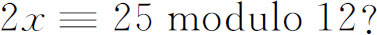
这个方程没有解，因为2x是偶数而2x－25是奇数，所以2x－25不可能是12的倍数。多项式同余式的基本定理已由拉格朗日(2)建立了，高斯在第二节对它重新作了证明。一个n次同余式
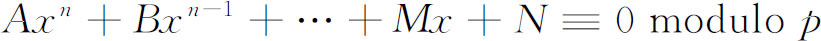
不可能有多于n个互不同余的根，其中模p是素数，它不能整除A。
在第三节高斯开始处理幂的同余式。在这里他用同余式的术语给了费马小定理一个证明。费马小定理用同余式的术语叙述就是：若p是素数而a不是p的倍数，则
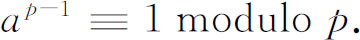
这个定理从他对高次同余式，即对
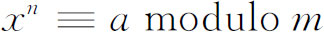
的研究中推出，这里a和m是互素的。这个题目被高斯之后的许多人继续研究着。
《探讨》的第四节讨论平方剩余。如果p是一个素数，而a不是p的倍数，并且如果存在一个x，使得
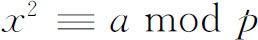
，则a是p的平方剩余；否则a是p的平方非剩余。在证明了一些关于二次同余式的次要的定理之后，高斯给出了二次反转定律的第一个严密证明（第25章第4节）。虽然1783年，欧拉在他的《分析短论》（Opuscula Analytica）的一篇论文中已经给出了像高斯一样完全的叙述，但是高斯在他的《探讨》的论文第151条中说，没有一个人以他那样简单的形式提出过这个定理。他参考了欧拉的其他著作，其中包括《短论》中的别的论文，还参考了勒让德1785年的著作。关于这些论文，高斯正确地指出，证明都是不完全的。据推测，高斯在1796年当他19岁时已经发现了这个定律的证明。在《探讨》中他给出了另一个证明，以后他又发表了四个别的证明。在他未发表的论文中还找到另外两个证明。高斯说他找了许多证明，因为他希望找出一个能够建立双二次反转定律的证明（见下面）。二次反转定律是同余式中的一个基本结果，高斯把它誉为算术中的宝石。在高斯给出他的各个证明之后，后来的数学家给出了50个以上的其他证明。
高斯还讨论了多项式的同余式。如果A和B是x的两个多项式，不妨设是实系数的，那么人们知道，可以唯一地找到多项式Q和R，使得
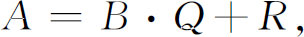
式中R的次数比B的次数低。这时就能说，多项式A1和A2以第三个多项式P为模是同余的，只要它们被P除时具有相同的余式R。
柯西（Augustin-Louis Cauchy）用这种思想(3)通过多项式的同余式去定义复数。如果f（x）是一个实系数多项式，用x2＋1去除它，因为余数要比除数的次数低，这时就有
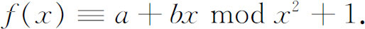
根据除法的步骤知道，这里的a和b一定是实数。如果g（x）是另一个那样的多项式，则
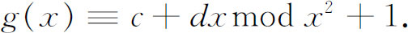
现在柯西指出，如果A1，A2和B是多项式，而且如果
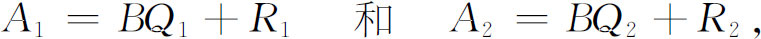
则
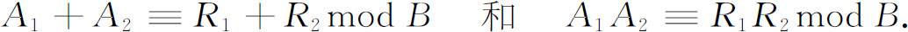
现在我们立刻可以看出
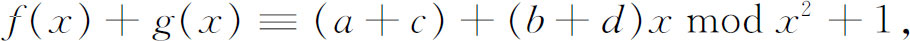
并且因为
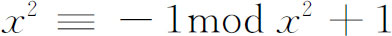
，还有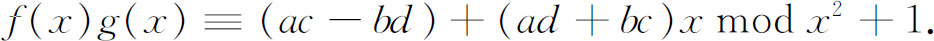
于是，数a＋bx和c＋dx像复数一样结合起来了；也就是说，它们具有复数的形式上的性质，x取代了i的位置。柯西还证明了每一个模x2＋1不同余于0的多项式g（x）都有逆，即存在多项式h（x）使得h（x）g（x）模x2＋1同余于1。
柯西确实引进了i去代替x，对他来说i是一个实的未定量。然后他证明了对任何
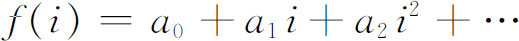
都有
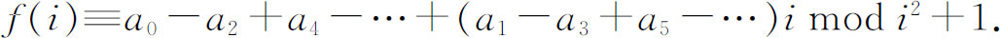
因此任何包含复数的表达式看起来就同c＋di这种形式一样，而人们是拥有对复数奏效的一切必需的工具的。于是对柯西而言，以他对i的理解，i的多项式取代了复数，并且人们可以把对模i2＋1有相同余式的所有多项式归入同一类。这些类就是复数。
有趣的是，在1847年柯西还对
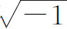
怀有疑惧。他说：“在代替了虚数论的代数等价论中，字母i不再表示符号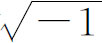
，我们完全拒绝了这个符号，并且我们能够毫无遗憾地放弃它，因为人们既不知道这个想象的符号表示什么，也不知道它意味着什么。相反，我们用字母i表示一个实的但却是未定的量，并且在用符号≡代替＝的同时，我们把所谓虚方程变换为对于变量i和对于除数i2＋1的代数等价关系。因为这个除数在一切公式中都一样，所以可以不写它。”在这个世纪的20年代高斯着手研究可应用于高次同余式的反转定律。这些定律又涉及同余式的剩余。例如对于同余式
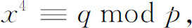
如果存在x的一个整值满足这个方程，人们就可以定义q作为p的一个双二次剩余。他得到了双二次反转定律（见下面）和三次反转定律。这方面的许多工作出现在从1808年到1817年的论文中，而关于双二次剩余的正式定理是在1828年和1832年(4)的论文中给出的。
为了使他的三次和双二次剩余的理论优美而简单，高斯使用了复数，即形如a＋bi的数，其中a和b是整数或0。在高斯关于双二次剩余的著作中，必须考虑模p是形如4n＋1的素数的情形，形如4n＋1的素数能分解成复的因数，高斯需要这些因数。为了获得这些因数，高斯认识到，必须超出通常的整数域而引进复整数。虽然欧拉和拉格朗日已经把这种整数引入了数论，但正是高斯建立了它们的重要性。
在通常的整数论中，可逆元素是＋1和－1，而在高斯的复整数论中，可逆元素却是±1和±i。一个复整数叫做合数，如果它是两个非可逆元素的复整数的乘积。如果那种分解是不可能的，则该整数叫做一个素数。例如5＝（1＋2i）（1－2i），所以是合数，而3却是一个复素数。
高斯证明了复整数在本质上具有和普通整数相同的性质。欧几里得（Euclid）证明了（第4章第7节）每一个整数可唯一地分解为素数的乘积。这个唯一分解定理常被称为算术基本定理，高斯证明了只要不把四个可逆元素作为不同的因数，唯一分解定理对复整数也成立。这就是，如果
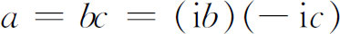
，则这两种分解是一样的。高斯还指出，求两个整数的最大公约数的欧几里得法可应用于复整数。普通素数的许多定理可转化为复素数的定理。例如费马定理转化为如下形式：如果p是一个复素数a＋bi，而k是任何一个不能被p整除的复整数，则
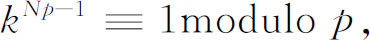
式中Np是p的模
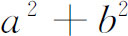
。对复整数也有二次反转定律，这点高斯在他1828年的论文中已陈述过。通过复数，高斯能够把双二次反转定律叙述得相当简单。把不能被1＋i整除的整数定义为非偶整数。准素非偶整数是那种非偶整数a＋bi，其中b是偶数，a＋b－1也是偶数。例如－7和－5＋2i是准素非偶整数。双二次剩余的反转定律可叙述为：如果α和β是两个准素非偶素数，A和B是它们的模，则
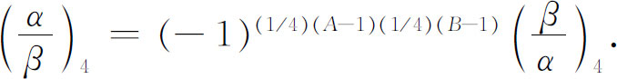
符号（α/β）4具有下述意义：如果p是任何一个复素数，k是任何一个不能被p整除的双二次剩余，则（k/p）4是i的幂ie，它满足同余式
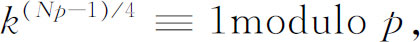
式中Np表示p的模。这个定律等价于下列说法：两个准素非偶素数之间的两个双二次特征是相同的，也就是
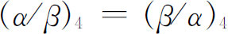
，只要每个素数模4同余于1；但是如果没有一个素数满足这个同余条件，则这两个双二次特征就互反，即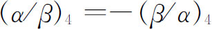
。高斯陈述了这一互反性定理，但是没有发表他的证明。定理的证明是雅可比于1836年到1837年在哥尼斯堡（Königsberg）的演讲中给出的。艾森斯坦（Ferdinand Gotthold Eisenstein，1823—1852）是高斯的学生，他发表了这一定理的五个证明，其中前两个出现于1844年(5)。
高斯发现，对于三次互反性他能得到一个运用“整数”a＋bρ的定律，这里ρ是
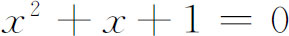
的一个根，a和b是通常的（有理）整数，但是高斯没有发表这个结果。那是他死后在他的论文中发现的。三次反转定律首先为雅可比(6)所陈述，并由他在哥尼斯堡的演讲中证明。第一个发表出来的证明是属于艾森斯坦的(7)。看到这个证明雅可比就声称(8)，这正是他在他的演讲中给出的，但是艾森斯坦愤怒地否认了有任何剽窃(9)。还存在高于四次的同余式的反转定律。